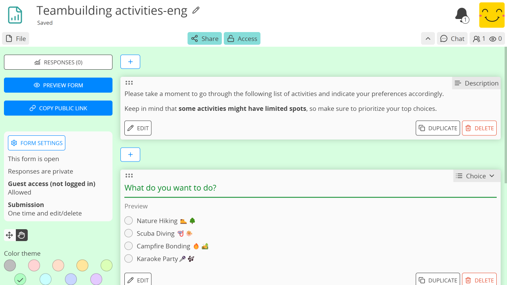
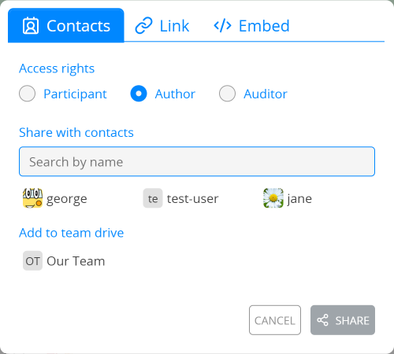

表單#

角色#
表單具備與其他 CryptPad 應用程式相同的協作與隱私功能，但在使用上有些許不同需求，例如填寫表單的人應能編輯自己的答案，但不能編輯其他使用者的答案或表單本身。因此分享表單時的 存取權限 與其他應用程式不同。表單有三種角色：
作者：可編輯題目與 表單設定。
稽核者：可檢視表單的所有回應，不論是否已公開。
參與者：可填寫表單，且僅在作者將回應設為公開後才能檢視回應。
若要依特定角色分享表單（例如傳給參與者），請先在 分享 選單中選擇角色，再選擇聯絡人或複製連結。

备注
當參與者正在填寫表單時，使用者名單、即時通與加入協作工作階段的提示都會關閉，以避免讓人覺得有人在旁觀看作答。
編輯表單#
要新增題目，請在最後一題之後使用 新增 選單，或使用每題之間的 。
要刪除題目，請在該題上使用 刪除 按鈕。
工具#
說明#
使用 Markdown 語法在表單中加入文字。
已登入使用者
要從 CryptDrive 加入圖片或上傳新圖片，請使用工具列中的 圖示。
分頁#
將表單分成多頁。僅對參與者顯示。
條件區塊#
單選 與 核取方塊 題型可用來顯示或隱藏某一區塊的題目。
題型#
文字#
回應：單行文字
選項：
文字類型：文字、數字、連結或電子郵件
备注
若為連結或電子郵件，當使用者填寫的格式不符時，該題會以紅色標示並顯示錯誤訊息。
段落#
回應：多行文字
選項：
字元上限：可設定（預設 1000）
單選#
回應：從清單中選一項
選項：
新增選項 按鈕
Grab the handle and drag to re-order options
以 刪除選項
單選矩陣#
回應：每個項目各選一項
選項：
新增選項 與 新增項目 按鈕
Grab the handle and drag to re-order items and options
以 刪除項目或選項
日期#
回應：選擇日期與時間
核取方塊#
回應：從清單中可多選
選項：
最多可選數量
新增選項 按鈕
Grab the handle and drag to re-order options
以 刪除選項
核取方塊矩陣#
回應：每個項目可多選
選項：
最多可選數量（每個項目）
新增選項 與 新增項目 按鈕
Grab the handle and drag to re-order items and options
以 刪除項目或選項
排序清單#
回應：對清單選項的偏好順序
選項：
新增選項 按鈕
Grab the handle and drag to re-order options
以 刪除選項
孔多塞法：
自 v5.3 起，回應可透過 孔多塞法 顯示結果。可選擇舒爾茲法或排序配對法顯示勝出者，詳情也會顯示每位候選人贏得的對戰數。
投票#
回應：對每個選項可填 同意、 不同意，或 可接受
選項類型：
文字
新增選項 按鈕
Grab the handle and drag to re-order options
以 刪除選項
日期
在月曆中點選以選擇日期選項
時間
點選選項以在月曆中選擇日期與時間
點選「新增多個日期與時間」以選擇多個選項，並使用 全部新增 一次加入所有已選選項。
表單設定#
使用頂端三個按鈕可快速存取：
回應 （數量）：切換至回應頁面
預覽表單：開啟參與者連結
複製公開連結：複製參與者連結
备注
若要分享表單的**作者**連結（具編輯權限），請使用工具列中的 分享 選單。
截止日期#
此日期之後表單將不再接受新回應
使用 設定截止日期 按鈕從月曆選擇日期
若已設定截止日期，請使用 移除截止日期 取消設定。
匿名化回應#
所有回應皆會匿名化，不論是否已登入 CryptPad 帳號。若未勾選，已登入的參與者在允許訪客存取時（見下方）仍可選擇匿名填答。
訪客存取#
封鎖：僅已登入 CryptPad 帳號的使用者可填寫表單。
允許：未註冊使用者可填寫，已登入使用者可選擇匿名填答。
送出後編輯#
僅限一次：參與者只能填寫表單一次，送出後無法修改或刪除回應。
僅限一次且可編輯/刪除：參與者只能填寫一次，但送出後可修改或刪除自己的回應。
可多次填寫：參與者可多次填寫表單，但每次送出後無法修改或刪除該次回應。
可多次填寫且可編輯/刪除：參與者可多次填寫，且送出後可修改或刪除自己的回應。
备注
請注意：若允許訪客存取，未註冊使用者仍可能透過瀏覽器無痕視窗或清除 Cookie 等方式，多次填寫「僅限一次」的表單。
公開回應#
允許已送出表單的參與者檢視回應。啟用後會公開所有過去與未來的回應。
警告
回應一旦設為公開即無法再改回不公開。
送出訊息#
新增自訂訊息，於參與者送出表單後顯示。
色彩主題#
選擇表單的背景與醒目色彩。
回應#
新回應的通知會透過整合通知傳送給表單*擁有者*。
進階使用情境#
搭配存取清單的匿名回應#
若要對已知使用者群組進行匿名問卷，可將匿名填答功能與 存取名單 搭配使用。
參與者須登入已列於存取清單的帳號（直接列於清單或透過所屬的 團隊）才能存取表單。
若表單允許匿名填答，參與者可匿名作答，而存取清單可確保他們來自特定使用者群組。
匯入/匯出#
表單文件本身可匯出與匯入為 JSON 格式。
要匯出回應，請在 回應 頁面選擇以下兩種方式之一：
使用 匯出 按鈕匯出為 CSV 或 JSON 檔案
使用 匯出至試算表 按鈕可將資料匯出為試算表並加入您的雲端硬碟
备注
建立試算表時會自動填入當時表單的資料。但由於端對端加密的運作方式，試算表內容不會隨新回應自動更新。